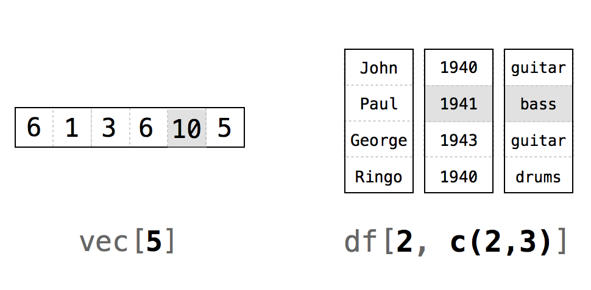
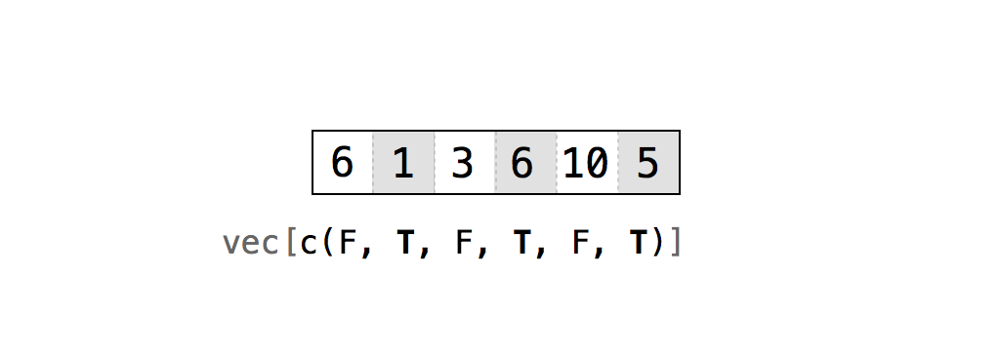
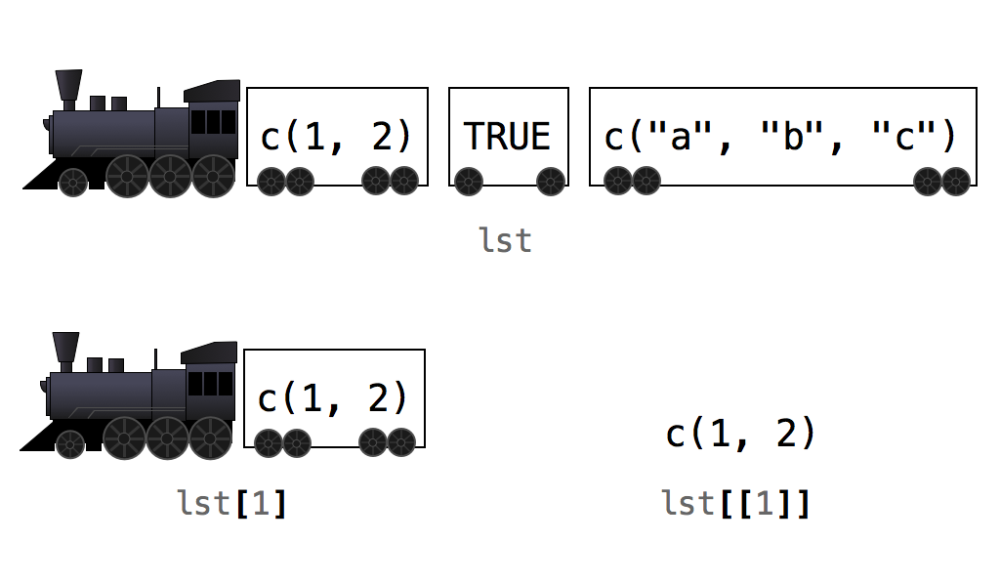

5 Rの記法
カードのデッキ（山札）が手に入ったので、次はそれを使ってカードらしい操作をする方法が必要です。まず、時々デッキをシャッフルしたくなるでしょう。そして、デッキからカードを配る（一度に1枚、一番上のカードを配る。イカサマは無しです）必要もあります。
これらを行うには、データフレーム内の個々の値を操作する必要があります。これはデータサイエンスにおいて不可欠なタスクです。例えば、デッキの一番上からカードを配るには、次のようにデータフレームの最初の行を選択する関数を書く必要があります。
deal(deck)
## face suit value
## king spades 13Rの記法（Notation）システムを使用すれば、Rオブジェクト内の値を選択できます。
5.1 値の選択
Rには、Rオブジェクトから値を抽出するための記法システムがあります。データフレームから値または値のセットを抽出するには、データフレーム名の後に一対の大括弧（ハードブラケット）を書きます。
deck[ , ]括弧の間には、カンマで区切られた2つのインデックス（Index）が入ります。インデックスは、Rにどの値を返すべきかを伝えます。Rは最初のインデックスを使用してデータフレームの行をサブセット（抽出）し、2番目のインデックスを使用して列をサブセットします。
インデックスの書き方には選択肢があります。Rにはインデックスを書くための6つの異なる方法があり、それぞれ少しずつ異なる動作をします。どれも非常にシンプルで便利ですので、一つずつ見ていきましょう。インデックスは以下のものを使って作成できます。
- 正の整数
- 負の整数
- ゼロ
- 空白
- 論理値
- 名前
最も単純なのは正の整数を使用する方法です。
5.1.1 正の整数（Positive Integers）
Rは、正の整数を線形代数における \(ij\) 記法と同じように扱います。deck[i, j] は、deck の \(i\) 行目、\(j\) 列目の値を返します（Figure 5.1）。\(i\) と \(j\) は数学的な意味での整数であればよく、Rでは数値型（Numeric）として保存されていても構いません。
head(deck)
## face suit value
## king spades 13
## queen spades 12
## jack spades 11
## ten spades 10
## nine spades 9
## eight spades 8
deck[1, 1]
## "king"2つ以上の値を抽出するには、正の整数のベクトルを使用します。例えば、deck[1, c(1, 2, 3)] または deck[1, 1:3] を使うことで、deck の最初の行を抽出できます。
deck[1, c(1, 2, 3)]
## face suit value
## king spades 13Rは、1行目かつ、1、2、3列目にある deck の値を返します。Rがこれらの値を deck から実際に削除するわけではないことに注意してください。Rは、元の値のコピーである新しい値のセットを提供します。この新しいセットを、代入演算子を使ってRオブジェクトに保存できます。
new <- deck[1, c(1, 2, 3)]
new
## face suit value
## king spades 13
Tip繰り返し
インデックスの中で数値を繰り返すと、Rは対応する値を「サブセット」の中に複数回返します。次のコードは、deck の最初の行を2回返します。
deck[c(1, 1), c(1, 2, 3)]
## face suit value
## king spades 13
## king spades 13Rの記法システムはデータフレームに限定されません。オブジェクトの各次元に対して1つのインデックスを指定すれば、任意のRオブジェクトで同じ構文を使用して値を選択できます。例えば、（1次元である）ベクトルを単一のインデックスでサブセットできます。
vec <- c(6, 1, 3, 6, 10, 5)
vec[1:3]
## 6 1 3
Tipインデックスは1から始まります
プログラミング言語によっては、インデックスが0から始まるものもあります。その場合、0がベクトルの最初の要素を返し、1が2番目の要素を返す、といった具合になります。
Rの場合はそうではありません。Rのインデックス作成は、線形代数におけるインデックス作成と同じように動作します。最初の要素は常に1でインデックスされます。なぜRは違うのでしょうか？おそらく、数学者のために書かれたからでしょう。線形代数の講義でインデックス作成を学んだ私たちは、なぜコンピュータプログラマーが0から始めるのか不思議に思うものです。
Tipdrop = FALSE
データフレームから2つ以上の列を選択すると、Rは新しいデータフレームを返します。
deck[1:2, 1:2]
## face suit
## king spades
## queen spadesしかし、単一の列を選択すると、Rはベクトルを返します。
deck[1:2, 1]
## "king" "queen"代わりにデータフレームとして返してほしい場合は、括弧の中にオプション引数 drop = FALSE を追加します。
deck[1:2, 1, drop = FALSE]
## face
## king
## queenこの方法は、行列や配列から単一の列を選択する場合にも有効です。
5.1.2 負の整数（Negative Integers）
負の整数によるインデックス作成は、正の整数とは正反対のことを行います。Rは、負のインデックスに含まれる要素以外のすべての要素を返します。例えば、deck[-1, 1:3] は、deck の最初の行以外のすべてを返します。deck[-(2:52), 1:3] は最初の行を返し、それ以外を除外します。
deck[-(2:52), 1:3]
## face suit value
## king spades 13データフレームの行や列の大部分を含めたい場合、負の整数は正の整数よりも効率的なサブセットの方法になります。
同じインデックスの中で負の整数と正の整数を混ぜようとすると、Rはエラーを返します。
deck[c(-1, 1), 1]
## Error in xj[i] : only 0's may be mixed with negative subscriptsただし、行のインデックスに一つ、列のインデックスに別のもの（例：deck[-1, 1]）というように、異なるインデックスで負の整数と正の整数を使用することは可能です。
5.1.3 ゼロ（Zero）
インデックスとしてゼロを使用するとどうなるでしょうか？ゼロは正の整数でも負の整数でもありませんが、Rは依然としてある種のサブセットを行うためにそれを使用します。インデックスとしてゼロを使用すると、Rはその次元から何も返しません。これにより空のオブジェクトが作成されます。
deck[0, 0]
## data frame with 0 columns and 0 rows正直に言うと、ゼロでインデックスを付けることはあまり役には立ちません。
5.1.4 空白（Blank Spaces）
空白を使用して、ある次元のすべての値を抽出するようRに伝えることができます。これにより、オブジェクトをある次元ではサブセットし、他の次元ではサブセットしないということが可能になります。これは、データフレームから行全体や列全体を抽出するのに便利です。
deck[1, ]
## face suit value
## king spades 135.1.5 論理値（Logical Values） {#logic}
インデックスとして TRUE と FALSE のベクトルを指定すると、Rは各 TRUE と FALSE をデータフレームの行（またはインデックスを置く場所によっては列）に対応させます。そして、TRUE に対応する各行を返します（Figure 5.2）。
Rがデータフレームを読みながら、「この \(i\) 番目の行を返すべきか？」と問いかけ、インデックスの \(i\) 番目の値を参照して答えている様子を想像すると分かりやすいかもしれません。このシステムを機能させるには、ベクトルがサブセットしようとしている次元と同じ長さである必要があります。
deck[1, c(TRUE, TRUE, FALSE)]
## face suit
## king spades
rows <- c(TRUE, F, F, F, F, F, F, F, F, F, F, F, F, F, F, F,
F, F, F, F, F, F, F, F, F, F, F, F, F, F, F, F, F, F, F, F, F, F,
F, F, F, F, F, F, F, F, F, F, F, F, F, F)
deck[rows, ]
## face suit value
## king spades 13
こんなにたくさんの TRUE や FALSE を入力したい人がいるだろうか、と奇妙に思うかもしれませんが、このシステムは値の変更（Modifying Values）で非常に強力な力を発揮します。
5.1.6 名前（Names）
最後に、オブジェクトに名前がある場合は、名前で要素をリクエストできます（名前（Names）を参照）。これはデータフレームの列を抽出する一般的な方法です。列にはほとんどの場合名前が付いているからです。
deck[1, c("face", "suit", "value")]
## face suit value
## king spades 13
# value列全体
deck[ , "value"]
## 13 12 11 10 9 8 7 6 5 4 3 2 1 13 12 11 10 9 8
## 7 6 5 4 3 2 1 13 12 11 10 9 8 7 6 5 4 3 2
## 1 13 12 11 10 9 8 7 6 5 4 3 2 15.2 カードを配る
Rの記法システムの基本を学んだところで、それを活用してみましょう。
練習問題：カードを配る
データフレームの最初の行を返す関数を作成するため、以下のコードを完成させてください。
deal <- function(cards) { # ? }
解答例 データフレームの最初の行を返すシステムであれば、どれを使っても
deal関数を書くことができます。ここでは、分かりやすい正の整数と空白を使用します。deal <- function(cards) { cards[1, ] }
この関数は、まさに望み通りの動作をします。データセットから一番上のカードを配ってくれます。しかし、deal を何度も実行すると、その印象は薄れてしまいます。
deal(deck)
## face suit value
## king spades 13
deal(deck)
## face suit value
## king spades 13
deal(deck)
## face suit value
## king spades 13deal は常にスペードのキングを返します。なぜなら、deck はカードを配ったことを「知らない」からです。そのため、スペードのキングは一番上に留まり、再び配られるのを待っています。これは解決が難しい問題であり、環境（Environments）で扱います。差し当たり、カードを配るたびにデッキをシャッフルすることで問題を回避できます。そうすれば、常に新しいカードが一番上に来るようになります。
シャッフルは一時的な妥協案です。実際のデッキでゲームをプレイする際の確率とは一致しません。例えば、スペードのキングが2回連続で現れる確率が依然として存在します。しかし、状況は見た目ほど悪くはありません。ほとんどのカジノでは、カードカウンティング（場に出たカードを記憶して確率を予測する手法）を防ぐために、一度に5〜6個のデッキを使用します。そのような状況で遭遇する確率は、ここで作成するものと非常に近くなります。
5.3 デッキをシャッフルする
本物のデッキをシャッフルするとき、カードの順序をランダムに入れ替えます。仮想のデッキでは、各カードはデータフレームの行です。デッキをシャッフルするには、データフレームの行をランダムに入れ替える必要があります。そんなことができるのでしょうか？もちろんです！そして、そのために必要なことはすでにすべて学んでいます。
馬鹿げているように聞こえるかもしれませんが、まずデータフレームのすべての行を抽出することから始めましょう。
deck2 <- deck[1:52, ]
head(deck2)
## face suit value
## king spades 13
## queen spades 12
## jack spades 11
## ten spades 10
## nine spades 9
## eight spades 8何が得られましたか？順序が全く変わっていない新しいデータフレームです。では、異なる順序で行を抽出するようRに依頼したらどうなるでしょうか？例えば、2行目、その次に1行目、そして残りのカードというように。
deck3 <- deck[c(2, 1, 3:52), ]
head(deck3)
## face suit value
## queen spades 12
## king spades 13
## jack spades 11
## ten spades 10
## nine spades 9
## eight spades 8Rはその通りにしてくれます。すべての行が、指定した順序で返されます。行をランダムな順序で返してほしい場合は、1から52までの整数をランダムな順序に並べ替え、その結果を行のインデックスとして使用します。そのような整数のランダムなコレクションをどうやって生成すればよいでしょうか？おなじみの sample 関数の出番です。
random <- sample(1:52, size = 52)
random
## 35 28 39 9 18 29 26 45 47 48 23 22 21 16 32 38 1 15 20
## 11 2 4 14 49 34 25 8 6 10 41 46 17 33 5 7 44 3 27
## 50 12 51 40 52 24 19 13 42 37 43 36 31 30
deck4 <- deck[random, ]
head(deck4)
## face suit value
## five diamonds 5
## queen diamonds 12
## ace diamonds 1
## five spades 5
## nine clubs 9
## jack diamonds 11これで新しいセットは真にシャッフルされました。これらの手順を関数の中にラップすれば完成です。
練習問題：デッキをシャッフルする
前述のアイデアを使って
shuffle関数を作成してください。shuffleはデータフレームを受け取り、そのデータフレームのシャッフルされたコピーを返す必要があります。
解答例
shuffle関数は以下のようになります。shuffle <- function(cards) { random <- sample(1:52, size = 52) cards[random, ] }
素晴らしい！これで、カードを配る合間にデッキをシャッフルできるようになりました。
deal(deck)
## face suit value
## king spades 13
deck2 <- shuffle(deck)
deal(deck2)
## face suit value
## jack clubs 115.4 ドル記号と二重括弧
Rの2つのタイプのオブジェクトは、オプションの第2の記法システムに従います。ドル記号 $ 構文を使用して、データフレームやリストから値を抽出できます。Rプログラマーとして $ 構文には何度も遭遇することになるため、その仕組みを確認しておきましょう。
データフレームから列を選択するには、データフレーム名と列名を $ で区切って書きます。列名の周りに引用符を付ける必要がないことに注意してください。
deck$value
## 13 12 11 10 9 8 7 6 5 4 3 2 1 13 12 11 10 9 8 7
## 6 5 4 3 2 1 13 12 11 10 9 8 7 6 5 4 3 2 1 13
## 12 11 10 9 8 7 6 5 4 3 2 1Rは列内のすべての値をベクトルとして返します。この $ 記法は非常に便利です。なぜなら、データセットの変数をデータフレームの列として保存することが多いからです。時々、変数内の値に対して mean（平均）や median（中央値）といった関数を実行したくなるでしょう。Rにおいて、これらの関数は入力として値のベクトルを期待しており、deck$value はまさにその形式でデータを提供してくれます。
mean(deck$value)
## 7
median(deck$value)
## 7リストの要素に名前が付いている場合は、リストに対しても同じ $ 記法を使用できます。この記法にはリストにおいても利点があります。通常の方法でリストをサブセットすると、Rは要求された要素を含む新しいリストを返します。これは、1つの要素だけを要求した場合でも同様です。
これを確認するために、リストを作成します。
lst <- list(numbers = c(1, 2), logical = TRUE, strings = c("a", "b", "c"))
lst
## $numbers
## [1] 1 2
## $logical
## [1] TRUE
## $strings
## [1] "a" "b" "c"そして、それをサブセットします。
lst[1]
## $numbers
## [1] 1 2結果は、1つの要素を持つ、より小さなリストになります。その要素はベクトル c(1, 2) です。多くのR関数はリストでは動作しないため、これは厄介なことがあります。例えば、sum(lst[1]) はエラーを返します。ベクトルをリストに保存したが最後、リストとしてしか取り出せないというのは恐ろしいことです。
sum(lst[1])
## Error in sum(lst[1]) : invalid 'type' (list) of argument$ 記法を使用すると、Rは選択された値をリスト構造を介さずにそのままの形で返します。
lst$numbers
## 1 2その結果をすぐに関数に渡すことができます。
sum(lst$numbers)
## 3リストの要素に名前がない（または名前を使いたくない）場合は、1つの括弧ではなく2つの括弧を使用してリストをサブセットできます。この記法は $ 記法と同じことを行います。
lst[[1]]
## 1 2言い換えれば、単一の括弧でリストをサブセットすると、Rはより小さなリストを返します。二重括弧でリストをサブセットすると、Rはリストの要素の中にあった値だけを返します。この機能は、Rのどのインデックス作成方法とも組み合わせることができます。
lst["numbers"]
## $numbers
## [1] 1 2
lst[["numbers"]]
## 1 2この違いは微妙ですが重要です。Rコミュニティでは、これを理解するための人気があり役立つ例えがあります（Figure 5.3）。各リストを列車、各要素を貨車だと想像してください。単一の括弧を使用すると、Rは個々の貨車を選択し、それを新しい列車として返します。各貨車は中身を保持していますが、その中身は依然として貨車（つまりリスト）の中にあります。二重括弧を使用すると、Rは実際に貨車から荷物を下ろし、その中身を返してくれます。

Importantattach は絶対に使わない
Rの初期の頃、ロードしたデータセットに対して attach() を使用することが流行りました。これはやめましょう！ attach は、StataやSPSSといった他の統計ソフトで使用されていたものと似た計算環境を再現し、それらのソフトから移行してきたユーザーに好まれました。しかし、RはStataやSPSSではありません。RはRの計算環境を使用するように最適化されており、attach() を実行すると一部のR関数で混乱を招く可能性があります。
attach() は何をするのでしょうか？表面上は、タイピングの手間を省いてくれます。deck データセットを attach すると、各変数を名前で参照できるようになります。deck$face と入力する代わりに、単に face と入力できます。しかし、タイピングは悪いことではありません。明示的になる機会を与えてくれますし、コンピュータプログラミングにおいて「明示的であること」は良いことです。データセットをアタッチすると、Rが2つの変数名を混同する可能性が生じます。これが関数の内部で起こると、使用不可能な結果が得られ、何が起きたのかを説明する役立たずなエラーメッセージが表示されることになります。
Rに保存された値を取得するエキスパートになったところで、これまでに達成したことをまとめてみましょう。
5.5 まとめ
Rに保存されている値にアクセスする方法を学びました。データフレーム内にある値のコピーを取得し、そのコピーを新しい計算に使用できます。
実際、Rの記法システムを使用して、任意のRオブジェクト内の値にアクセスできます。それを使用するには、オブジェクト名の後に括弧とインデックスを書きます。オブジェクトがベクトルのような1次元の場合は、1つのインデックスを指定するだけです。データフレームのような2次元の場合は、カンマで区切られた2つのインデックスを指定する必要があります。そして \(n\) 次元の場合は、\(n\) 個のインデックスをカンマで区切って指定する必要があります。
値の変更（Modifying Values）では、このシステムを一歩進めて、データフレーム内に保存されている実際の値を変更する方法を学びます。これらはすべて特別なことにつながります。つまり、データに対する完全な制御です。これでデータをコンピュータに保存し、個々の値を自在に取得し、コンピュータを使用してそれらの値で正しい計算を行えるようになりました。
これは初歩的なことに聞こえますか？そうかもしれませんが、効率的なデータサイエンスには強力で不可欠なものです。もうすべてを頭で暗記する必要も、暗算を間違えることを心配する必要もありません。データに対するこの低レベルの制御は、プロジェクト3：スロットマシンのテーマである、より効率的なRプログラムを作成するための前提条件でもあります。